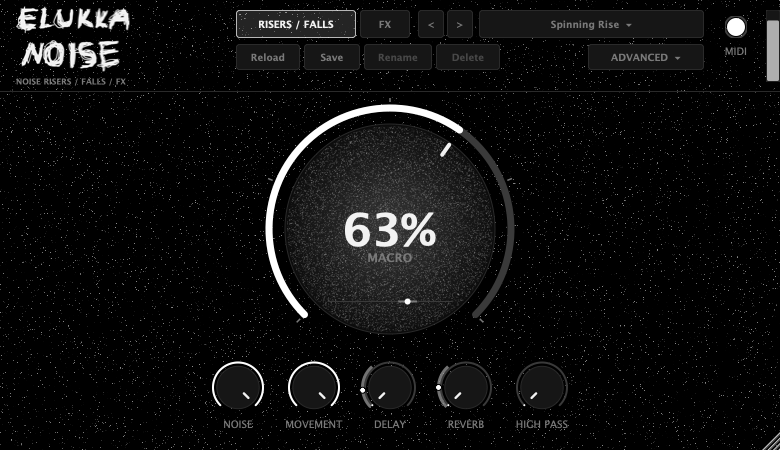

Beta · v0.9.26
ElukkaNoise
A free noise riser, fall and FX instrument for techno, hard techno, industrial and psytrance. Hold a note and automate the one MACRO knob: 0 to 100 % is a riser, 100 to 0 % a fall. Two filters, LFOs, sample & hold, a trance gate, a modulation matrix, compressor, delay and reverb, with 33 factory presets. VST3 instrument for macOS, Windows and Linux.

Source code on GitHub · Release notes · ElukkaSynth
Each download contains the plugin and a README with installation steps. This is a beta: please report problems on GitHub. Free software under the AGPLv3.